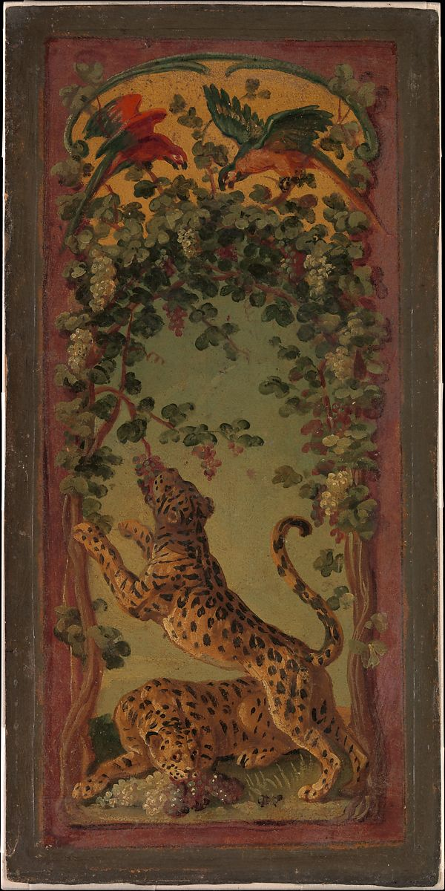

<head>
<meta charset="UTF-8" />
<meta name="keywords" content="drawing, painting" />
<meta name="description" content="drawings by Sunjy" />
<title>Sunjy</title>
<link rel="shortcut icon" type="image/x-icon" href="../../mImages/mCommon/favicon.ico" media="screen" />
<link rel="stylesheet" type="text/css" href="../../mCsses/mCommon/mCssA.css" />
<link rel="stylesheet" type="text/css" href="../../mCsses/mCommon/mCssB.css" />
<link rel="stylesheet" type="text/css" href="../../mCsses/mCommon/mCssC.css" />
<link rel="stylesheet" type="text/css" href="../../mCsses/mCommon/mCssD.css" />
<link rel="stylesheet" type="text/css" href="../../mCsses/mContent/mCssA.css" />
<link rel="stylesheet" type="text/css" href="../../mCsses/mContent/mCssB.css" />
<link rel="stylesheet" type="text/css" href="../../mCsses/mContent/mCssC.css" />
<link rel="stylesheet" type="text/css" href="../../mCsses/mContent/mCssD.css" />
</head>
<script type="text/javascript" src="../../mScripts/mContent/mContentAA.js" /></script>
<script type="text/javascript" src="../../mScripts/mContent/mContentAB.js" /></script>
<script type="text/javascript" src="../../mScripts/mContent/mContentAC.js" /></script>
<script type="text/javascript" src="../../mScripts/mContent/mContentAD.js" /></script>
<script type="text/javascript"></script> 
<script type="text/javascript">
document.write('<div class="mImgAbsolute"></div>');
/*
document.write('<p class="mFontSizeBColor" />From a white paper...</p>');
document.write('<table class="center"><tr><td>');
document.write('');
document.write('</td></tr></table>');
*/
</script>


<script type="text/javascript">
document.write('<p class="mFontSizeBColor" />Panthers of Bacchus Eating Grapes</p>');
document.write('<p class="mFontSizeSColor" />By Alexandre Francois Desportes, ca. 1719–20. Having first trained with the Flemish animal painter Nicasius Bernaerts (1620–1678), Desportes studied at the Académie Royale, where he entered as an animal painter in 1699. About 1712 he began to design tapestries for the Savonnerie and Gobelins manufactories.<br><br>This is a study by Desportes for a six-panel folding Savonnerie tapestry screen, or paravent, which was first woven at the Chaillot workshops in Paris in 1719–20. His various designs proved very popular and were woven throughout the eighteenth century. </p>');
document.write('<table class="center" /><tr><td>');
document.write('<br>This is a study by Desportes for a six-panel folding Savonnerie tapestry screen, or paravent, which was first woven at the Chaillot workshops in Paris in 1719–20. His various designs proved very popular and were woven throughout the eighteenth century. " />');
document.write('</td></tr></table>');
</script>


